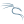
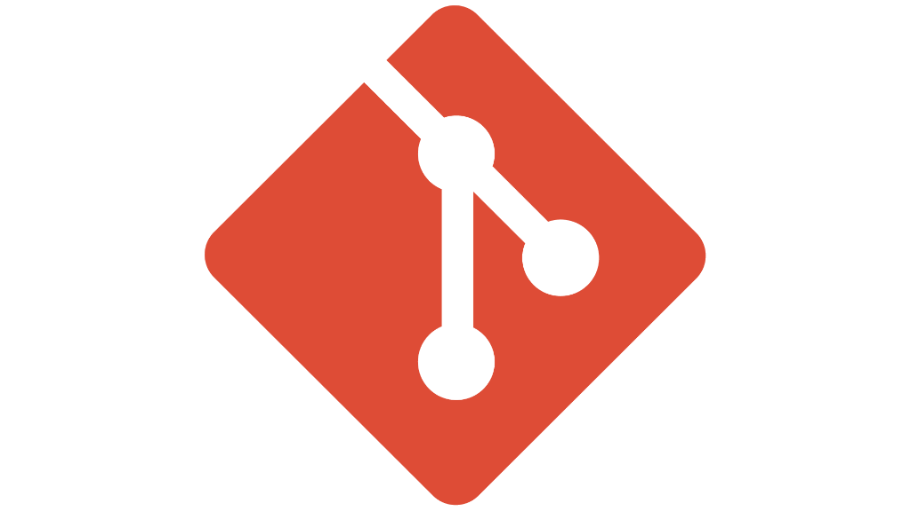
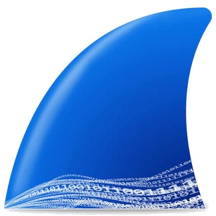
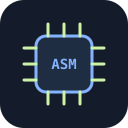
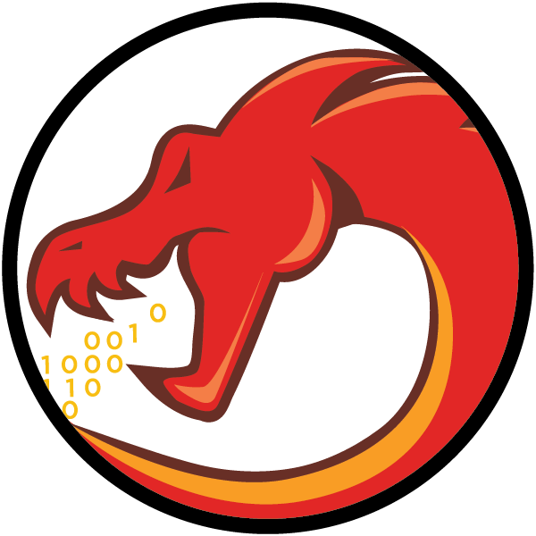
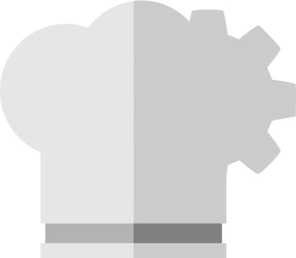
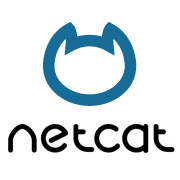
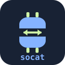
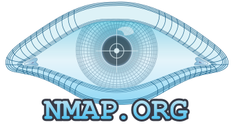

Representando a la Universidad Católica San Antonio de Murcia (UCAM) en la 3ª edición del mayor hackathon de ciberdefensa de España.
Organizador: MCCE (Defensa)Fecha: 14 y 15 Octubre 2026Modalidad: Attack & Defense / CTFActividad: Online
Portal Oficial Talent4Cyber
El Lore de Talent4Cyber
¿Qué es Talent4Cyber?
Talent4Cyber es el hackathon universitario de referencia en España organizado por el Mando Conjunto del Ciberespacio (MCCE) del Ministerio de Defensa, en estrecha colaboración con la Universidad de Granada, la Universidad Politécnica de Cartagena (UPCT), Trust Lab y el respaldo de INCIBE.
Su misión es detectar, entrenar y potenciar el talento joven universitario dentro del escenario de las operaciones defensivas del ciberespacio nacional frente a amenazas híbridas y ataques sofisticados dirigidos contra la soberanía digital del país.
Trama Días 1 y 2: Operación Estrecho Fantasma
La trama táctica y narrativa del hackathon se articula alrededor de la Operación Estrecho Fantasma, una simulación operativa dividida en dos jornadas consecutivas de alta intensidad técnica:
Durante el Día 1, decenas de escuadras universitarias de toda España compitieron en una intensa criba técnica en modalidad Jeopardy / CTF, resolviendo desafíos de criptografía militar, análisis forense digital (DFIR), ingeniería inversa de binarios, análisis de tráfico de red y explotación de servicios web vulnerables. Únicamente los 25 mejores clasificados lograban asegurar su pase a la fase definitiva.
En el Día 2, los clasificados se enfrentaron a un ejercicio de Attack & Defense centrado en la defensa y mitigación de incidentes cibernéticos sobre infraestructuras críticas del Estrecho: sistemas de posicionamiento marítimo AIS de buques mercantes, balizamiento marítimo, redes operativas portuarias y cables submarinos estratégicos de telecomunicaciones.
Escuadrón Vertex
PabloLíder
Irene
Antonio
Enrique
Resultados del Equipo Vertex
Métricas oficiales alcanzadas durante la exigente jornada clasificatoria de la competición.
0Pts
Puntos
Top 25
Puesto
4
Miembros
Herramientas Utilizadas

Entorno de Operaciones
Máquina Virtual Kali Linux
Se utilizó una máquina virtual con Kali Linux debido a que se tenía que trabajar con archivos que simulaban virus y malware, los cuales podían suponer problemas de seguridad e integridad en las máquinas personales.
Python 3

Git

Wireshark

Desensamblador

Ghidra

CyberChef

Netcat

Socat

Network Mapper
Experiencia
Haber participado en Talent4Cyber 2026 ha sido una de las experiencias más intensas y donde más he aprendido en lo que llevo de carrera. Representar a la UCAM en un hackathon nacional organizado por el Mando Conjunto del Ciberespacio nos metió de lleno en retos técnicos bastante complejos y problemas del mundo real.
Conseguimos 108 puntos gracias al esfuerzo de todos, sobre todo por parte de Irene, que fue la que más retos logró resolver.
Eso sí, el factor tiempo nos jugó una mala pasada: al tener otros compromisos fuera de la competición, no pudimos estar al 100% volcados en el evento ni exprimir a fondo la primera jornada. Por eso no alcanzamos la puntuación de corte para entrar en el Top 25 y pasar al Día 2.
Aun así, lejos de venirnos abajo, Pablo, Irene, Antonio y yo nos quedamos con unas sensaciones buenísimas. Pasar horas haciendo retos nos sirvió para ver de cerca cómo funciona la ciberdefensa militar real, y acabar con muchísimas ganas de participar en más hackathons.